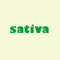

Ми працюємо, щоб Ви відпочивали.
Працюємо 🇺🇦 🇵🇱
Indica
Містить вищий рівень CBD і нижчий рівень THC. Ефект: розслабляючий, седативний. Використання: при стресі, безсонні, болю.
Hybrid
Поєднує в собі риси Sativa та Indica, пропонуючи збалансований ефект. Ідеально для тих, хто шукає помірне розслаблення без сильної втоми.

Sativa
Має вищий рівень THC, що забезпечує енергійний, стимулюючий ефект. Використовується при втомі та для покращення настрою.